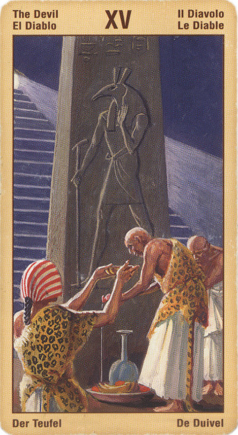

Диавол
Эта карта представляет грубую силу инстинктов и природы, а также опасность заблуждений и излишеств. В то же время она представляет потенциал для достижения свободы, достатка и изобилия.
Она учит нас эффективно жить в материальном мире, не поддаваясь соблазнам и иллюзиям современной жизни, охваченной безумием богатства, статуса, сексуальности и насилия. Эта карта указывает на опасность быть слишком избалованным, навязчивым, жадным, склонным к излишествам и злоупотреблениям, она также намекает на ту огромную силу, которая станет нам доступной, если мы сможем освободиться от рабства материального и чувственного мира, не потеряв при этом способность жить в этом мире полнокровной и творческой жизнью.
Она соответствует зодиакальному знаку Козерога.
Смысл карты: ты думаешь, это дьявол захватил в плен твою душу? Тебе кажется, что вырваться из порочного круга невозможно? Но взгляни на карту: цепь не сжимает шеи изображенных на ней людей, а лежит свободно. Стоит снять ее – и плену конец! Что бы ни олицетворяла для тебя эта цепь: секс, игру, алкоголь или что-то еще, – наложил ее на себя ты сам. И снять можешь тоже ты сам. Начиная новый этап жизни, можно, конечно, дать волю своим увлечениям – но не затянулась ли эта “увертюра”?
Значение: эта карта считается символом испытания, экзамена, который человек должен сдать, чтобы проверить свои силы и подняться на новый уровень осознания себя и мира.
Таким экзаменом или испытанием может стать что угодно – рискованное предприятие, решение пойти на обострение конфликта или, действительно, алкоголь, наркотики, супружеская измена. Фокус в том, что экзамен нужно сдать, нужно пройти через него сознательно, – и, если карта в прямом положении, это будет лишь способствовать росту и освобождению от искушений на будущее.
По мере того, как вы овладеваете материальным миром, учитесь зарабатывать деньги, проявлять себя с творческой стороны и добиваться успеха, по мере того, как вы познаете свою сексуальность, освобождаетесь от запретов и ограничений, возрастает риск того, что эти виды деятельности превратятся для вас в навязчивые идеи. Они обладают привлекательностью, их переполняет сила, немало людей в этом мире ослеплены их энергией и не видят ничего кроме них.
В ответ на это можно стать аскетом, отрицая или даже ненавидя окружающий мир, с его жадностью и материализмом, с его потребительским подходом к жизни, который грозит уничтожить всю планету.
Однако Кернуннос несет с собой не только проблему, но и перспективу.
Влюбленные, которые спят перед ним, когда-нибудь проснутся. Они узнают о том, что силы, которые создают детей и животных, растения и деревья, которые питают их энергией, необходимой для создания изобилия и красоты на земле, могут свободно и мощно течь через них, как только они примут свою судьбу - быть сознательными и нравственными жителями земли. Время отказываться от ответственности прошло. Кернуннос призывает нас проснуться и взять на себя ответственность за свою жизнь и за то, как мы живем. Сделав это, мы сможем открыть для себя потенциал для изобилия и раскрепощения.
Из всех Арканов Таро Диавол представляется самым трудным для понимания, потому что у каждого он свой. Общими для всех можно, пожалуй, считать лишь ситуацию зависимости от кого-то или чего-то, слабую волю, постыдный провал благих намерений, а также действия, совершаемые вопреки собственным убеждениям. На глубинном уровне он означает, что наш вопрос затрагивает, прежде всего, теневые стороны нашей личности.
Конечно, в бытовых трактовках эта карта не означает ничего хорошего: мир сковывает человека цепями. Люди становятся такими, какими их принимает этот явленный мир, заставляющий бороться за свое существование. Но к развитой личности эта карта может трактоваться и по-другому.
Пятнадцатый аркан - это темная сторона всех вещей, всех арканов, всех знаков Зодиака. Зло является составной частью как сущности человека, так и жизни вообще. В тени света скрывается дьявол, но не ходить в тень - трусость; человек должен уметь видеть дьявола и не бояться вступить с ним в борьбу (а еще лучше - в диалог).
Кроме того, карта "Дьявол" может символизировать мучительную жажду материального или чисто физического благополучия, а также желание властвовать над другими. В определенных случаях сигнализирует и о рабской зависимости от эротических желаний.
Олицетворяет собой борьбу меж добром и злом. Разум, который стремиться к разрушению, к тому, чтобы получить желаемое любой ценой.
Что может означать данная карта в личном раскладе! Прежде всего она свидетельствует, что в настоящий момент главными в вашей жизни являются отнюдь не духовные цели. Ценности, которые вы жаждете обрести, - исключительно материального свойства.
Достигнете вы желаемого или нет - расскажут сопутствующие Младшие Арканы.
В перевернутом виде - человек либо не сдаст экзамена (струсит или провалится), либо не сможет освободиться от зависимости, в которую попал, по крайней мере в ближайшее время.
Для бизнесмена Диавол в прямом положении – совет ответить шантажом на шантаж, угрозой на угрозу: враги слабее его, они отступят, если не переставать давить на них. Перевернутый, наоборот, советует пойти на компромисс или на уступки.
Когда мы вовлечены в какие-то неприятные отношения или же просто оказались в сложных обстоятельствах, от той боли, которую мы испытали бы, полностью осознав сложившуюся ситуацию, нас защищает частичная "слепота" Когда же мы "пробуждаемся" и все же осознаем сложившуюся ситуацию, то для нас наступает период горького несчастья, который в конечном итоге побуждает нас изменить жизнь и самым решительным образом разрешить сложившуюся ситуациею. Выпадая в раскладе, эта карта может свидетельствовать о том, что вы переживаете именно такой период своей жизни, однако она может означать и нечто совершенно другое. В зависимости от той позиции, которую она занимает в раскладе, она может свидетельствовать о злоупотреблении властью вами или кем-то еще, либо о том, что вы полностью порвали со своими материалистическими взглядами, которые до настоящего времени вас в значительной степени ограничивали.
В перевернутом положении карта говорит о злоупотреблении силой, о концентрации усилий исключительно на достижении материальных благ. Если карта выпадает среди хороших - то можно предположить и удачное любовное похождение или ситуацию, в которой вам благополучно удастся "увернуться" от
возмездия, а если сказать уж совсем прямо: разврат без неприятных последствий.